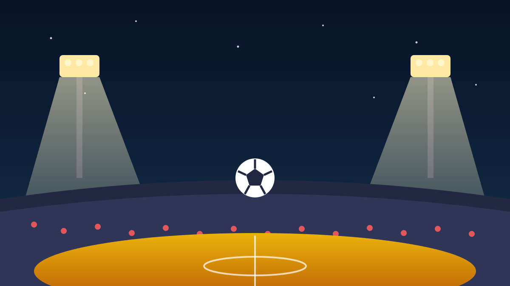

1 / 7

⚽ OLAHRAGA
Bangkit dari Kubur, Tetap Dimaki
Arema FC tertinggal 0-2 di Kanjuruhan, lalu comeback 2-2 — drama habis. Tapi kolom komentar justru penuh tuntutan pelatih mundur. Ada apa? Geser →
2 / 7
🔥
Singo Edan Menolak Kalah
Arema FC bermain imbang 2-2 melawan Bhayangkara Presisi Lampung FC di Stadion Kanjuruhan, Malang, Sabtu sore (10 Oktober) pada pekan ke-4 BRI Super League 2026/2027.
Babak pertama bencana: Bhayangkara unggul 2-0 lewat sundulan Matias Ocampo dan gol Milan Ristovski. Tapi babak kedua, Singo Edan bangkit — Marcos Vinicius dan Samuel Otusanya bikin skor imbang.
3 / 7
📺
VAR Bikin Wasit Plin-plan
Drama makin panas gara-gara VAR. Arema sempat dapat penalti di pengujung babak pertama, tapi wasit membatalkannya setelah meninjau ulang — dianggap bukan handball.
Di sisi lain, Bhayangkara sempat mencetak gol lewat Ocampo di menit-menit akhir, tapi dianulir karena offside. Keputusan yang bikin dua kubu sama-sama emosi.
4 / 7
🔄
Arkhan Fikri Jadi Game Changer
Titik baliknya ada di jeda: Arkhan Fikri dimasukkan menggantikan Hansamu Yama, dan energi Arema langsung berubah. Marcos Vinicius mencetak gol balasan, lalu Otusanya menyundul umpan tendangan bebas Vinicius untuk menyamakan kedudukan.
Arema nyaris menang di akhir, tapi skor 2-2 bertahan sampai peluit panjang. Kedua tim pulang dengan 6 poin dari 4 laga — Arema di peringkat 8, Bhayangkara di peringkat 9.
5 / 7
🎙️
Kata Pelatihnya
Pelatih Arema Marcos Santos mengambil tanggung jawab penuh atas babak pertama yang buruk. Dia bilang perubahan mentalitas di ruang ganti jadi kunci comeback, tapi mengaku tidak sepenuhnya puas — targetnya tetap menang.
Pelatih Bhayangkara Oscar Bruzon melihatnya dari dua sisi: tren tak terkalahkan timnya bertahan sampai pekan ke-4, tapi kecewa karena keunggulan 2 gol buyar begitu saja.
6 / 7
💬
Kata netizen
"#MARCOSOUT" — tagar ini menggema di kolom komentar Instagram dan Facebook Arema FC pasca-laga. "Imbang terus Sam", "Pelatih minim taktik" — fans kecewa dengan taktik dan hasil imbang beruntun, meski timnya baru aja comeback. (Suara netizen — bukan fakta.)
7 / 7
🤔
Efeknya ke lo apa?
Drama kayak gini bukti Liga Indonesia makin seru ditonton — comeback, VAR, gol dianulir, semua dalam 90 menit. Papan tengah klasemen juga makin ketat, Arema dan Bhayangkara sama-sama ngumpulin 6 poin.
Buat lo yang ngikutin Super League: Arema bakal tandang ke markas Garudayaksa FC pada 17 Oktober. Apakah #MARCOSOUT bakal makin kenceng, atau malah reda? Kita lihat.